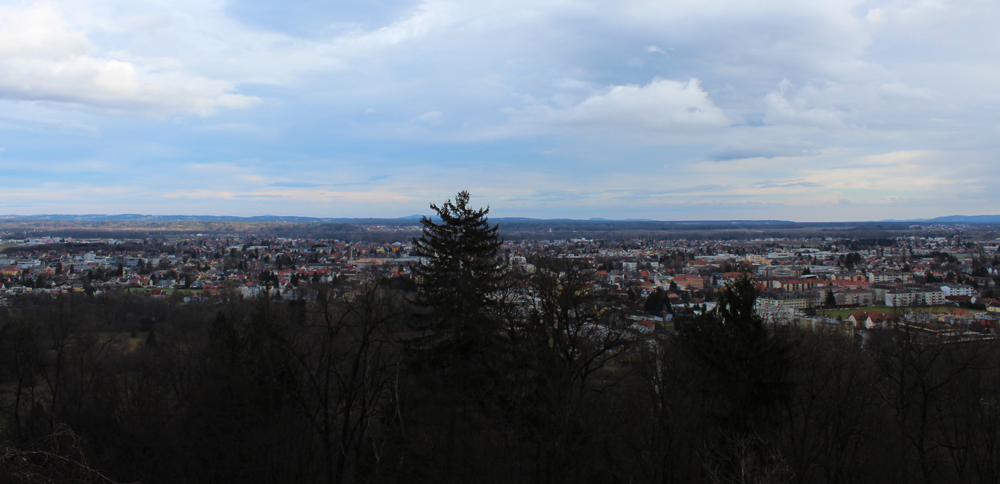
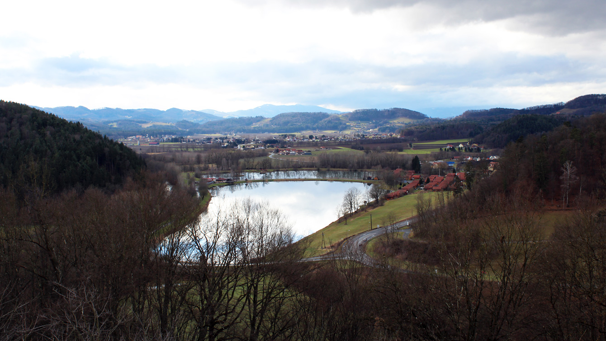
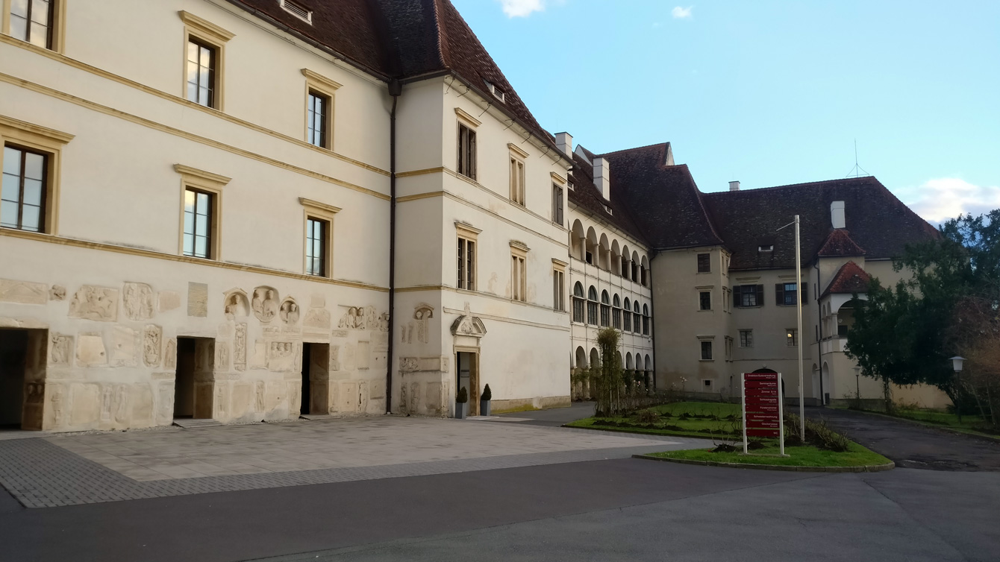

Der Hauptplatz in Leibnitz ist so ausgerichtet, dass die zwei Achsen des Hauptplatzes sich in der Ferne genau am Schloss Seggau treffen. Das heißt, wenn man am Hauptplatz ist, ist das Schloss quasi ein Mittelpunkt der Blickrichtung, was zu einer Inszenierung des Schlosses aus der Ferne führt. Nicht nur vom Hauptplatz, sondern im ganzen Bezirk Leibnitz ist es eine Art Mittelpunkt beziehungsweise Bezugsachse. Möge es aus dem anliegenden Dorf Kaindorf an der Sulm sein oder auch die Marktgemeinde Wagna, das Schloss ist aus verschiedensten Richtungen immer gut erkennbar.

Blick vom Schloss über die Stadt Leibnitz
Da das Schloss am Seggauberg wie vorher beschrieben ein Mittelpunkt der anliegenden Städte und Dörfer ist, hat es eine sehr gute Erschließung aus allen Himmelsrichtungen. Ob von Leibnitz oder Heimschuh, von beiden Seiten des Berges führt eine Landstraße zum Schloss hinauf. Auch diverse Wanderwege, Radwege oder nicht gepflasterte Kiesel-, Waldwege führen zur Spitze des Berges. Aus diesem Grund ist es ein gut besuchtes Tourismus-Ziel unserer Stadt. Nicht nur Touristen besuchen oft das Schloss, auch Bewohner der anliegenden Orte versammeln sich oft bei Festen oder Veranstaltungen.

Blick vom Schloss auf den Sulmsee
Bauweise
Die Fassaden sowie die Größe des Komplexes lassen das Schloss riesig wirken. Vor allem das Lapidarium an der Außenmauer des Schlosses ist besonders sehenswert. Die Gesamtwirkung des ganzen Komplexes ist sehr stimmig und gut in die Umgebung eingebunden. Auch die umliegenden Bauwerke wir Kindergarten und Restaurant tragen maßgeblich zur Wegeführung zum Schloss bei.
Das Schloss besteht aus mehreren verschiedenen Abteilungen, welche auch verschiedene Erschließungen nutzen. Während der Südliche Teil des Schlosses direkte Verbindung zur Straße hat, besitzt der nördliche Teil hauptsächlich Kieswege zum südlichen Teil. Während der südliche Teil des Ensembles nur aus dem Altbau des Schlosses besteht, besitzt der nördliche Teil diverse Neubauten welche dem hauseigenen Hotel des Schlosses angehört. Wenn man das Schloss durch das Haupttor in der Mitte betritt sieht man eine Art Stilbruch, den während rechts sich der Turm und die Altbauten erstrecken sind links fast ausschließlich Neubauten. Doch nach der großen Umbauphase von 1999-2009 konnte der Neubau sich doch noch durchsetzen und ist nun ein gutes Beispiel dafür, wie man Altbau mit Neubau verbinden kann. Beide Teile ergänzen sich nun zu einem großen Ganzen, welches in sich stimmig ist und funktioniert. Die Grundidee hinter der Renovierung war es, neue moderne Einrichtungen zu kreieren, welche aber die historische Substanz des Schlosses erhalten.

Oberschloss
Uhrturm
Der freistehende Uhrturm mit Durchfahrt zum Schlosshof steht zwischen Wirtschaftshof und Hochschloss. Der Turm beinhaltet ein Läutwerk mit drei Glocken, welches allerdings außer Betrieb ist.
Uhrturm
Bastionsturm
Im Bastionsturm auf der Südseite des Schlosses befindet sich die Seggauer Liesl. Sie ist die größte historische Glocke der Steiermark mit einem Durchmesser von 2 Metern. Im Rahmen von Führungen kann sie besichtigt werden. Jeden Sonn- und Feiertag wird sie von vier starken Frauen/Männern händisch geläutet.
Bastionsturm
Weinkeller
Der bischöfliche Weinkeller von Schloss Seggau ist einer der größten und eindrucksvollsten seiner Art in Europa. Er wurde 1693 bis 1697 unter Fürstbischof Rudolph Joseph Graf von Thun erbaut und ist über 300 Jahre alt. Ein besonderes Merkmal ist die Erbauung frei im Gelände stehend anstelle von unterirdisch. Die Innenausmaße von 75m Länge, 8m Breite und 8,5m Höhe sind ebenso beeindruckend wie das Gesamtfassungsvermögen von ca. 150.000 Litern.
Dort lagern Altweine zurückgehend bis ins Jahr 1929. Auf Wunsch gibt es im Weinkeller auch Altwein-Verkostungen mit Weinen ab dem Jahrgang 1980 und Altweinverkauf von einzelnen Flaschen älterer Jahrgänge.